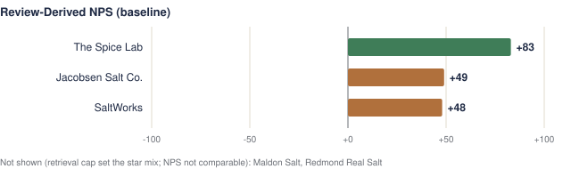
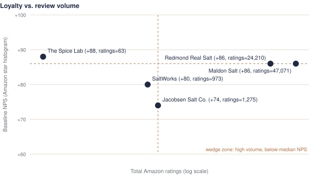

Overview

Competitor Analysis
Click a column header to sort. Click a row for the calculation.
| Competitor | Product | Review Count | Promoter % | Passive % | Detractor % | Baseline NPS | Alternative NPS | Source |
|---|
Methodology & Sensitivity
Baseline: 5★ = Promoter, 4★ = Passive, 1–3★ = Detractor. NPS = %Promoters − %Detractors (full precision, then rounded). Five stars is the clearest written expression of enthusiasm; four-star reviews often carry reservations; 1–3 stars signal dissatisfaction or a materially qualified experience. These boundaries are judgment calls. Results are a Review-Derived NPS, not survey NPS.
| Competitor | Baseline NPS | Alternative NPS | Change (exact pts) | 4★ share | Rank base → alt |
|---|
Selection bias & limitations
Online reviews overrepresent customers with unusually positive or negative experiences, creating a potentially bimodal distribution that exaggerates apparent customer polarization relative to the broader customer base.
Review Explorer
Where Should Silk Road Salts Compete?

Amazon Star Histograms
The written-review samples for heavily reviewed products are capped by the review endpoint, so their star mix is not reliable. Each Amazon listing shows the true star breakdown. Open each listing, scroll to Customer reviews, and type the five percentages exactly as shown (don't adjust them to total 100), the ratings count (“12,345 global ratings” → 12345), the average, the date you read it and your initials.
| Product | 5★ % | 4★ % | 3★ % | 2★ % | 1★ % | Total ratings | Avg | Recorded on | By | Notes | Check |
|---|
CSV for data/raw/histograms/star_histograms.csv
Preview NPS uses the same rules as the pipeline but is not in the report yet. To apply: replace
data/raw/histograms/star_histograms.csv with the CSV and run make all, or send it to Claude.
Report & Export
Reviews (CSV) · Reviews (JSON) · Analysis (JSON)
The PDF, charts and this page are generated from the same analysis.json by the Python pipeline.